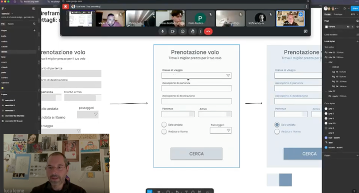

← Torna alla pagina principale
Un assaggio gratuito di come lavora un Design Engineer.

Use case: come ho messo in portfolio Leap, scuola di New York, applicando solo per 2 offerte di lavoro (la mia esperienza non è stata decisiva, ne lo è stato il mio portfolio lavori).
Use case: Time to Detox, Easycall, Watson, Poinx – come ho trovato i miei primi 5 clienti (spoiler: non "vendevo" il design, vendevo la mia expertise nel migliorare le conversioni di siti ecommerce. Il design è stato solo un mezzo).